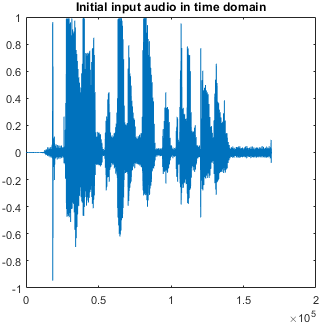
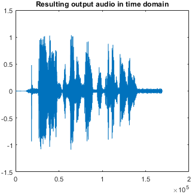
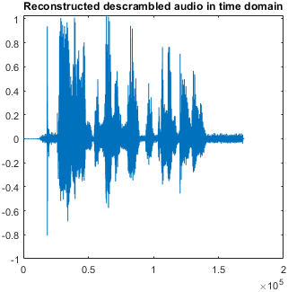
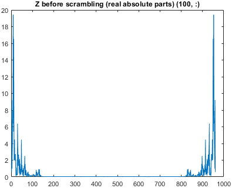
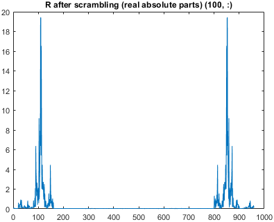
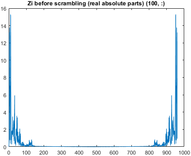
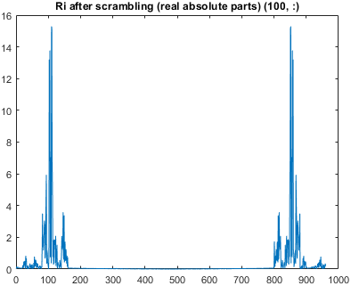

Variant: Only move around freqs from 1:160 and 801:960. (Same range as scramble1, but with different permutation.)
Image resolution for plots: 80
Fs = 48000, Fc = 0.29167
n = 169303, 169920, 169920 for input, scrambled, and reconstructed audio respectively.
| LF config | HF config | Comments |
|---|---|---|
temp1(1:160) = [A1, B1, C1, D1, E1, F1, G1, H1]; | temp1(801:960) = [I1, J1, K1, L1, M1, N1, O1, P1]; | No scrambling. (For comparison.) |
temp1(1:160) = [F1, E1, H1, G1, B1, A1, D1, C1]; | temp1(801:960) = [N1, M1, P1, O1, J1, I1, L1, K1]; | Scrambled audio inaudible and reconstruction is pretty good. |
temp1(1:160) = [D1, C1, B1, A1, H1, G1, F1, E1]; | temp1(801:960) = [N1, M1, P1, O1, J1, I1, L1, K1]; | Scrambled audio high-pitched and distorted but a few words still audible. Noisy reconstructed audio. |
temp1(1:160) = [B1, A1, G1, H1, D1, C1, F1, E1]; | temp1(801:960) = [N1, M1, P1, O1, J1, I1, L1, K1]; | Scrambled audio high-pitched and distorted but a few words still audible. Noisy reconstructed audio. |
temp1(1:160) = [C1, D1, G1, H1, B1, A1, F1, E1]; | temp1(801:960) = [N1, M1, P1, O1, J1, I1, L1, K1]; | Scrambled audio inaudible. Reconstructed audio is almost inaudible and very terrible. |
temp1(1:160) = [A1, H1, C1, F1, E1, B1, G1, D1]; | temp1(801:960) = [N1, M1, P1, O1, J1, I1, L1, K1]; | The reconstructed audio is terrible (but audible). And then somehow the scrambled audio is more audible than the reconstructed audio. |
temp1(1:160) = [H1, A1, B1, C1, D1, E1, F1, G1]; | temp1(801:960) = [N1, M1, P1, O1, J1, I1, L1, K1]; | Ineffective scrambling (only became more high pitched mostly) and terrible reconstruction (audible but uncomfortable). |
temp1(1:160) = [G1, H1, A1, B1, C1, D1, E1, F1]; | temp1(801:960) = [N1, M1, P1, O1, J1, I1, L1, K1]; | Slightly more scrambled but still ineffective. Reconstruction is still awful.. |
temp1(1:160) = [F1, G1, H1, A1, B1, C1, D1, E1]; | temp1(801:960) = [N1, M1, P1, O1, J1, I1, L1, K1]; | Mostly scrambled but still kinda audible. Reconstruction is better, with some high-pitched noise. |
temp1(1:160) = [E1, F1, G1, H1, A1, B1, C1, D1]; | temp1(801:960) = [N1, M1, P1, O1, J1, I1, L1, K1]; | Inaudible high-pitched scramble. Easy to understand but noisy reconstruction. Note: somehow could be reconstructed using [F1, G1, H1, A1, B1, C1, D1, E1] key. |
temp1(1:160) = [E1, F1, G1, H1, C1, D1, A1, B1]; | temp1(801:960) = [N1, M1, P1, O1, J1, I1, L1, K1]; | Mostly inaudible scrambling but some words are audible if you concentrate. Audible but very noisy reconstruction. |
temp1(1:160) = [G1, H1, E1, F1, C1, D1, A1, B1]; | temp1(801:960) = [N1, M1, P1, O1, J1, I1, L1, K1]; | Inaudible scrambling (tone/enunciation still leaks a bit). Okay but not good reconstruction. |
temp1(1:160) = [G1, H1, E1, F1, D1, C1, A1, B1]; | temp1(801:960) = [N1, M1, P1, O1, J1, I1, L1, K1]; | Mostly scrambled but more audible than [G1, H1, E1, F1, C1, D1, A1, B1]. Better reconstruction with some noise. |
temp1(1:160) = [H1, G1, E1, F1, D1, C1, A1, B1]; | temp1(801:960) = [N1, M1, P1, O1, J1, I1, L1, K1]; | Mostly scrambled but more audible than [G1, H1, E1, F1, C1, D1, A1, B1]. Audible but very noisy reconstruction. |
temp1(1:160) = [H1, G1, E1, F1, D1, C1, B1, A1]; | temp1(801:960) = [N1, M1, P1, O1, J1, I1, L1, K1]; | Mostly scrambled but more audible than [G1, H1, E1, F1, C1, D1, A1, B1]. Worse and noisy reconstruction. |
temp1(1:160) = [H1, G1, E1, F1, D1, C1, B1, A1]; | temp1(801:960) = [N1, M1, P1, O1, J1, I1, L1, K1]; | Slightly better scrambled. Mostly good reconstruction. |
temp1(1:160) = [H1, G1, F1, E1, D1, C1, B1, A1]; | temp1(801:960) = [N1, M1, P1, O1, J1, I1, L1, K1]; | Same same. Slightly worse reconstruction. |
temp1(1:160) = [H1, G1, F1, E1, D1, C1, B1, A1]; | temp1(801:960) = [I1, J1, K1, L1, M1, N1, O1, P1]; | NOT scrambled at all. |
temp1(1:160) = [H1, G1, F1, E1, D1, C1, B1, A1]; | temp1(801:960) = [M1, N1, O1, P1, I1, J1, K1, L1]; | Still slightly audible. Very good reconstruction. |
temp1(1:160) = [H1, G1, F1, E1, D1, C1, B1, A1]; | temp1(801:960) = [M1, N1, O1, P1, K1, L1, I1, J1]; | Still slightly audible. Very good reconstruction. |
temp1(1:160) = [H1, G1, F1, E1, D1, C1, B1, A1]; | temp1(801:960) = [O1, P1, M1, N1, K1, L1, I1, J1]; | Still slightly audible. Good reconstruction (better yet). |
temp1(1:160) = [H1, G1, F1, E1, D1, C1, B1, A1]; | temp1(801:960) = [P1, O1, N1, M1, L1, K1, J1, I1]; | Scramble is still slightly audible, but the reconstruction is very good with minimum noise. Notice that the scrambling configurations for (1:160) and (801:960) are "similar". |
temp1(1:160) = [H1, G1, F1, E1, B1, A1, D1, C1]; | temp1(801:960) = [P1, O1, N1, M1, J1, I1, L1, K1]; | Scramble is still slightly audible, slightly noisier but still overall good reconstruction. Notice that the scrambling configurations for (1:160) and (801:960) are "similar". |
temp1(1:160) = [H1, G1, F1, E1, B1, A1, D1, C1]; | temp1(801:960) = [N1, M1, P1, O1, J1, I1, L1, K1]; | Noisier reconstruction. Scrambling configurations no longer as "similar". |
 |  |  |
 |  |
 |  |